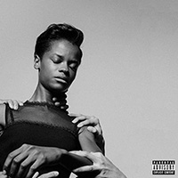

1. "Offence"
Producers: InfloWriters: Simbiatu Ajikawo. Dean Josiah Cover. Cloepatra
Nikolic
Length: 2:48 min

1. "Offence"
Producers: Inflo
2. "Boss"
Producers: Inflo
3. "Selfish" (featuring Cleo Sol)
Producers: Inflo
4. "Wounds" (featuring Chronixx)
Producers: Inflo
5. "Venom"
Producers: Inflo

6. "101 FM"
Producers: Inflo
7. "Pressure" (featuring Little Dragon)
Producers: Inflo. Sigurd

8. "Therapy"
Producers: Inflo
9. "Sherbet Sunset"
Producers: Inflo
10. "Flowers" (featuring Micheal Kiwanuka)
Producers: Inflo. Astronote